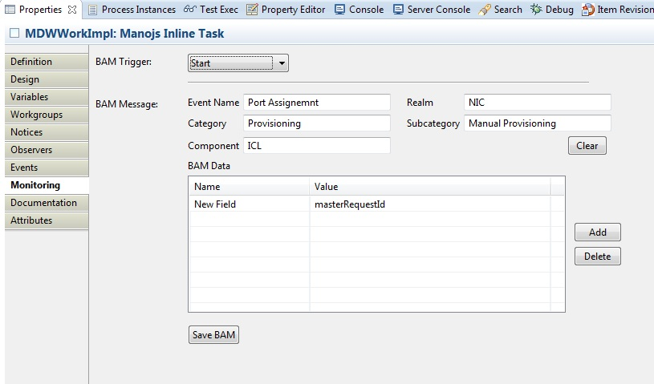
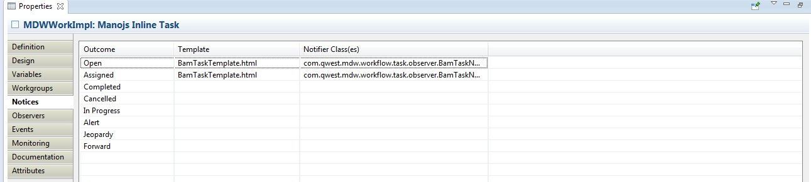

What is BAM?
Please refer to this document on what is BAM and how its implemented by MDW: BAM Design Document
How to collect BAM data
Set the com.centurylink.mdw.cfg property mdw.bam.url=http://lxomavmtc202.dev.qintra.com:10007/MDWWeb (for testing you can set mdw.bam.url=log).
Discover the required "bam" package
In order for your application to enable the sending of BAM messages, you have to import a "bam" workflow package into your project as follows:
- From MDW Designer, right click on your project and choose "Import Package(s)
- Select the "Discover" radio button and click "Next"
- Ensure that "bam" has been selected and click "Next" and "Finish"
BAM.xml
This file is included at package level. It defines the drop down in BAM data's Value column.
Runtime values are bound using MDW's Java EL Binding syntax.
There is a sample BAM.xml included in the MDW baseline package which looks like this
<PAGELET>
<TABLE NAME="BAM Data" VH="150">
<TEXT NAME="name" LABEL="Name" VW="150"/>
<DROPDOWN NAME="value" LABEL="Value" SOURCE="Variables">
<OPTION VALUE="#{context.masterRequestId}">masterRequestId</OPTION>
</DROPDOWN>
</TABLE>
</PAGELET>
You'll need to add the following import in your pom.xml to avoid a deploy-time exception:
com.centurylink.mdw.services.bam
Monitoring TAB in Designer

You can also Java EL Expressions in EventNames and Attributes.
Sample BAM Message
<bus:CustomEvent xmlns:bus="http://www.centurylink.com/bam">
<bus:MasterRequestId>30132</bus:MasterRequestId>
<bus:Realm>WFMT</bus:Realm>
<bus:EventName>TestBamMessage</bus:EventName>
<bus:EventTime>2013-07-05T07:43:27.139-05:00</bus:EventTime>
<bus:SubCategory>Testing</bus:SubCategory>
<bus:Attributes/>
<bus:SourceSystem>WFMT</bus:SourceSystem>
</bus:CustomEvent>
Task specific BAM Data (OSGi only)
You can capture task specific BAM data by configuring com.centurylink.mdw.workflow.task.notifier.BamTaskNotifier on the Notifier tab.
First select Template as BamTaskTemplate.html under MDW Baseline package. This file is a place holder for now and would be used for future enhancements.
If you have a email template for your email notification than you do not need to add BamTaskTemplate.html template.
You can configure multiple notifiers seperated by coma. For example for task
open notice you can have taskOpenEmail.xhtml as template and than have two notifiers configured like this com.centurylink.mdw.workflow.task.notifier.TaskEmailNotifier,com.centurylink.mdw.workflow.task.notifier.BamTaskNotifier.
Define following property in com.centurylink.mdw.cfg
mdw.bam.realm=MDW. Here instead of MDW you would have your application specific Realm like NIC or WFMT. This needs to be decided in consultation with OSR team.

Task BAM Message
Here is the sample BAM message for BAM event for a Task status change
<bus:CustomEvent xmlns:bus="http://www.centurylink.com/bam">
<bus:MasterRequestId>aa56486~131007-181507</bus:MasterRequestId>
<bus:Realm>MDW</bus:Realm>
<bus:EventName>Manojs Inline Task:Assigned</bus:EventName>
<bus:EventTime>2013-10-07T18:57:03.027-06:00</bus:EventTime>
<bus:Attributes>
<bus:Attribute><bus:Name>Name</bus:Name><bus:Value>Manojs Inline Task</bus:Value></bus:Attribute>
<bus:Attribute><bus:Name>Instance Id</bus:Name><bus:Value>30195</bus:Value></bus:Attribute>
<bus:Attribute><bus:Name>Assignee</bus:Name><bus:Value>aa56486</bus:Value></bus:Attribute>
<bus:Attribute><bus:Name>Due Date</bus:Name><bus:Value>10/07/2013</bus:Value></bus:Attribute>
<bus:Attribute><bus:Name>WorkGroup(s)</bus:Name><bus:Value>MDW Support,Dons Group,Manojs Group</bus:Value></bus:Attribute>
</bus:Attributes>
<bus:SourceSystem>MDWFramework</bus:SourceSystem>
</bus:CustomEvent>
Importing and Exporting BAM Attributes
Since BAM configuration is meant to be dynamic, it's not saved with the process definition. Rather, it's saved as override attributes of the process.
This approach makes it possible for Business Users to own BAM configuration and make changes in production (adding new data elements to report against, for example)
without worrying that their changes will be overwritten during the next package import from a dev/test environment. Users can also be confident that their changes
will not adversely affect the process design since they're saved independently.
Because of this approach, a separate export/import mechanism is used for migrating BAM configuration changes between environments.
An example of this migration is when process designers provide an initial configuration for a brand new process.
To export BAM configuration for all the processes in a workflow package, right-click on the package in Process Explorer view and select Export > Attributes > Monitoring.
In the Export Attributes dialog browse for the desired location, and click Finish. This generates an XML file that can be version controlled along with your process definitions.
To import the BAM attributes into a destination environment, right click on the project in Process Explorer and select Import > Attributes > Monitoring.
BIRT Reports
After collecting BAM data you can view the data using BIRT. In MDW, BIRT reports are designed using either Eclipse or Designer RCP.
BIRT provides extensive report design capabilities, including sophisticated crosstabs and charting, and MDW Designer exposes these capabilities so that users can create custom reports.
BIRT documentation is available in Designer under the help topic Designing Reports using BIRT.